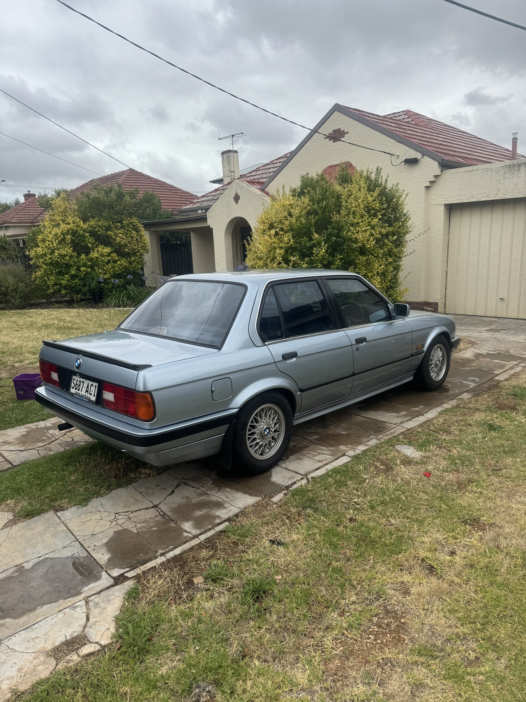
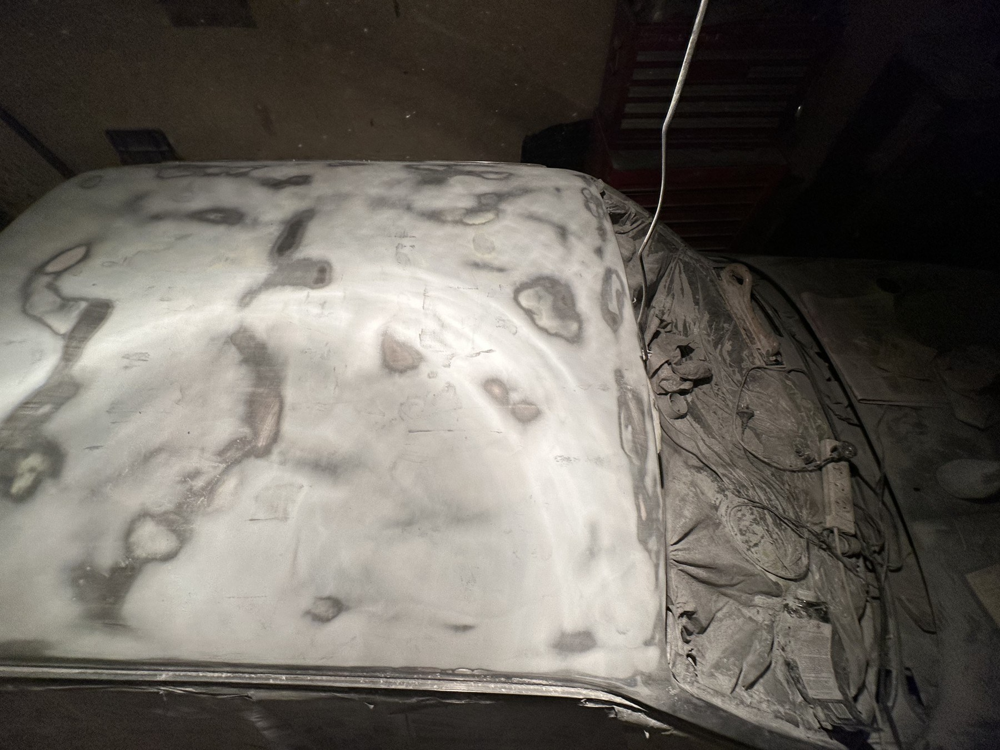
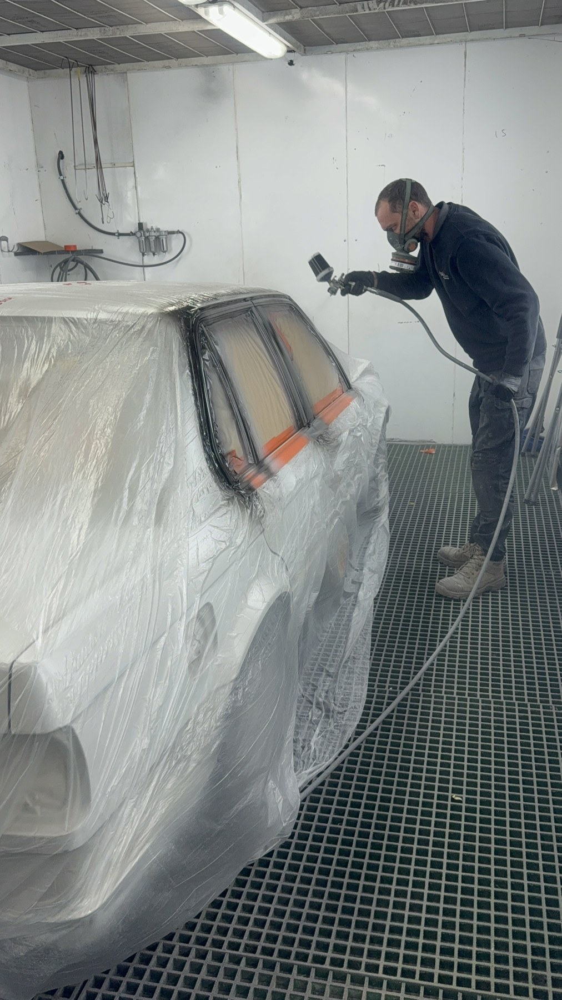
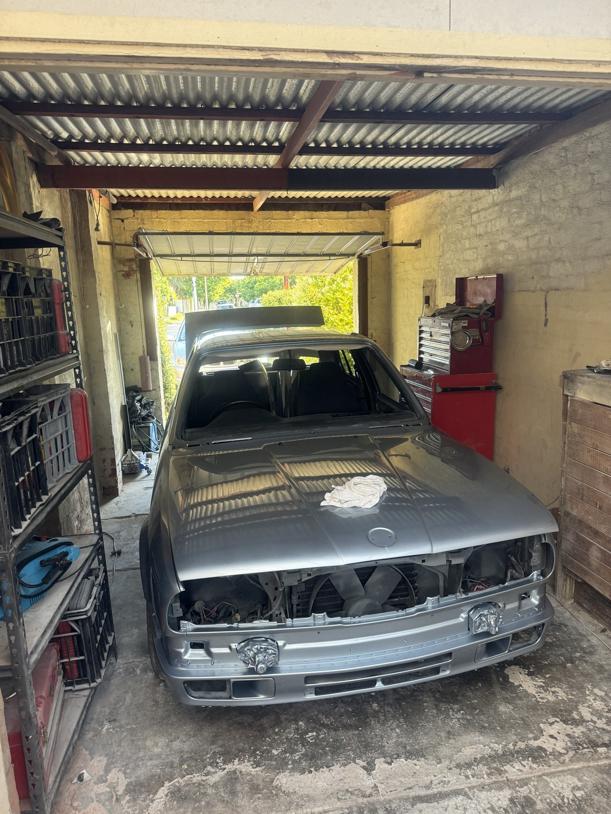
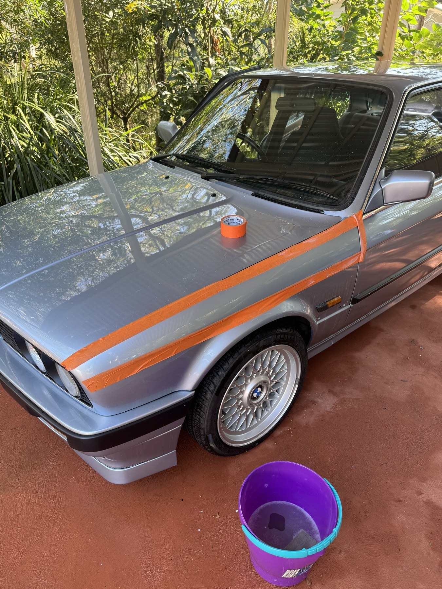

01 / 07Read ↗
E30 sedan respray
01 / The story
The project took over much of 2023: stripping the car, repairing hail damage and rust, preparing it for paint and eventually putting the whole thing back together.
02 / The process

02
Sanding, filler, a very dusty courtyard, and learning when a panel is actually straight.

03
Hidden corrosion, my first welding repairs, and finally getting the body ready for colour.

05
Glass, trim, bumpers, badges and a slightly stressful interstate-moving deadline.

06
Orange peel, the correction still to do, and the tools I would choose next time.


03 / The result